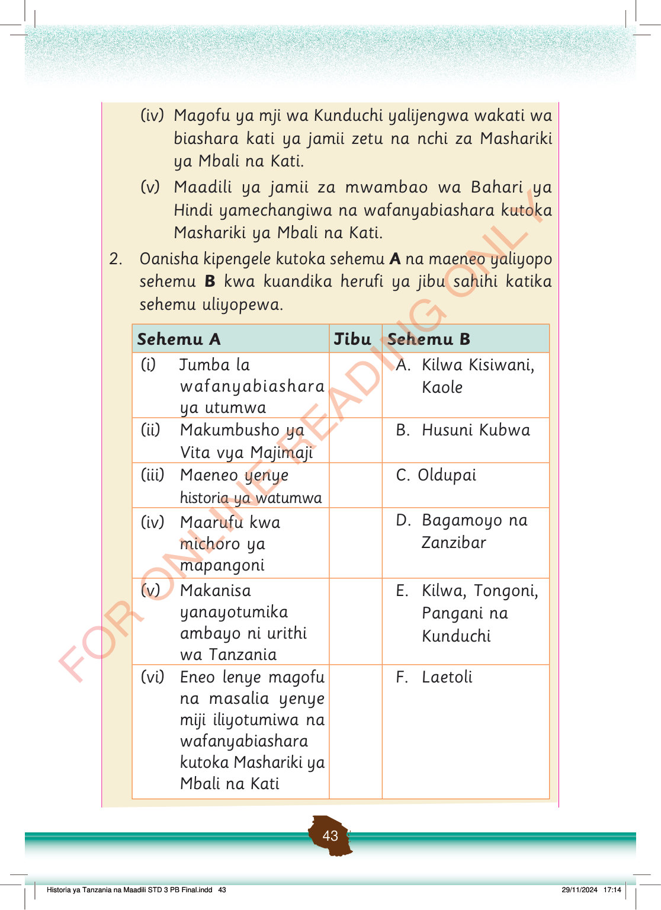

(iv) Magofu ya mji wa Kunduchi yalijengwa wakati wa biashara kati ya jamii zetu na nchi za Mashariki ya Mbali na Kati.
(v) Maadili ya jamii za mwambao wa Bahari ya Hindi yamechangiwa na wafanyabiashara kutoka Mashariki ya Mbali na Kati.
2.
Oanisha kipengele kutoka sehemu A na maeneo yaliyopo sehemu B kwa kuandika herufi ya jibu sahihi katika sehemu uliyopewa.
Sehemu A
Jibu
Sehemu B
(i)
Jumba la wafanyabiashara ya utumwa
A. Kilwa Kisiwani, Kaole
(ii)
Makumbusho ya Vita vya Majimaji
B. Husuni Kubwa
(iii)
Maeneo yenye historia ya watumwa
C. Oldupai
(iv)
Maarufu kwa michoro ya mapangoni
D. Bagamoyo na Zanzibar
(v)
Makanisa yanayotumika ambayo ni urithi wa Tanzania
E. Kilwa, Tongoni, Pangani na Kunduchi
(vi)
Eneo lenye magofu na masalia yenye miji iliyotumiwa na wafanyabiashara kutoka Mashariki ya Mbali na Kati
F. Laetoli